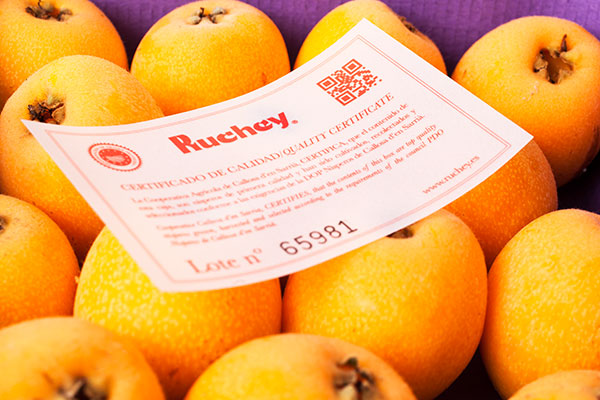
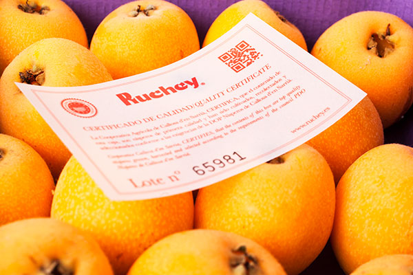

Un pueblo con encanto, que tiene desde maravillosas vistas hasta fiestas historicas.
Esta página ofrece un listado de elementos para conocer nuestros mejores sitios para visitar.
Página que explica en detalle el contenido del sitio web.
Página con documentación y enlaces a las fuentes de las que se ha sacado el contenido.


 
